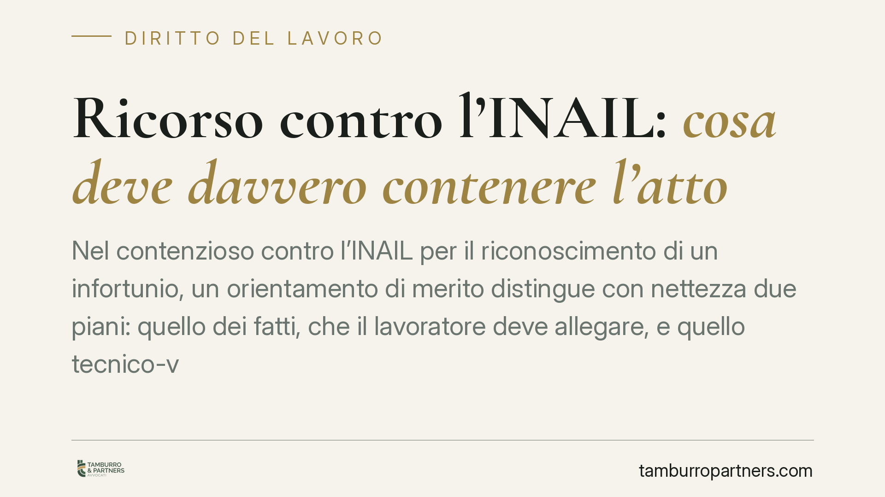

Ricorso contro l'INAIL: cosa deve davvero contenere l'atto
Nel contenzioso contro l'INAIL per il riconoscimento di un infortunio, un orientamento di merito distingue con nettezza due piani: quello dei fatti, che il lavoratore deve allegare, e quello tecnico-valutativo, riservato al consulente del giudice. Comprendere questa ripartizione evita ricorsi sovraccarichi di calcoli e, allo stesso tempo, atti carenti nella narrazione essenziale dell'accaduto.

Il principio: distinguere i fatti dalla tecnica
Un recente orientamento della giurisprudenza di merito in materia di lavoro ha ribadito un criterio utile nella redazione del ricorso contro l'INAIL per il riconoscimento di un infortunio: il lavoratore deve allegare i fatti essenziali — la dinamica dell'infortunio, la natura e l'entità delle lesioni — mentre i calcoli tabellari e le valutazioni medico-legali sul grado di invalidità competono al consulente tecnico d'ufficio (CTU) nominato dal giudice.
Nota redazionale sulla fonte: la pronuncia circolata sul tema (Tribunale di Napoli, sezione lavoro) non risulta allo stato verificabile nei suoi estremi definitivi. Per prudenza la trattiamo come indirizzo interpretativo di merito e non come precedente consolidato. Chi intenda richiamarla in un atto verifichi previamente numero e data presso fonti ufficiali.
Inquadramento normativo
La tutela dell'infortunio sul lavoro ha la sua cornice nel D.P.R. 30 giugno 1965, n. 1124 (Testo unico INAIL). Gli articoli 2 e 4 individuano, rispettivamente, le attività protette nell'ambito industriale e i soggetti assicurati; la nozione di infortunio come evento dovuto a «causa violenta in occasione di lavoro» è il presupposto costante della tutela. Il richiamo va quindi calibrato sulla specifica gestione assicurativa coinvolta, evitando citazioni generiche.
Il danno biologico di origine lavorativa è stato introdotto nel sistema indennitario INAIL dall'art. 13 del D.Lgs. 23 febbraio 2000, n. 38, che ne ha definito criteri e modalità di valutazione, poi attuati con il D.M. 12 luglio 2000. È su questa base che il CTU opera le stime percentuali: un terreno tecnico, non narrativo, che non ha ragione di appesantire il ricorso introduttivo.
Non contestazione e onere della prova: un equilibrio delicato
L'art. 115 del codice di procedura civile impone al giudice di porre a fondamento della decisione i fatti non specificamente contestati dalla parte costituita. Ne deriva che, se l'INAIL non contesta in modo puntuale la dinamica dell'infortunio allegata dal ricorrente, quel fatto può considerarsi provato senza necessità di ulteriore istruttoria.
Il meccanismo, però, ha limiti precisi. La non contestazione opera sui fatti storici, non sulle valutazioni giuridiche né, di regola, sul nesso di causalità quando questo richieda un accertamento tecnico. In altre parole: anche davanti a un ente che non contesta la caduta o la lesione, resta a carico del lavoratore dimostrare il collegamento causale tra evento ed esito invalidante, spesso proprio attraverso la CTU. L'alleggerimento documentale sui calcoli non si traduce quindi in una riduzione dell'onere probatorio sul nesso.
Va inoltre ricordato che un'allegazione fattuale generica o lacunosa può impedire l'operare dell'art. 115 c.p.c.: se il fatto non è descritto con sufficiente specificità, non può nemmeno dirsi «non contestato». La soglia della precisione, dunque, non si abbassa: cambia solo l'oggetto su cui concentrarla.
Implicazioni pratiche per il lavoratore
Per chi agisce contro l'INAIL, il messaggio operativo è duplice. Da un lato, non serve trasformare il ricorso in una perizia: anticipare percentuali, tabelle e punti di invalidità non rafforza l'atto e rischia di spostare il contraddittorio su un terreno tecnico prematuro. Dall'altro, l'essenzialità non autorizza l'approssimazione: la descrizione dell'infortunio, dei luoghi, dei tempi e delle lesioni deve essere circostanziata, perché è su quei fatti che si gioca la non contestazione.
Per l'ente, specularmente, si conferma l'onere di contestazione specifica: una difesa limitata a formule di stile rischia di lasciare incontestati i fatti decisivi.
Cosa fare in concreto
- Ricostruisci l'infortunio in modo puntuale: data, ora, luogo, dinamica, mansione svolta al momento dell'evento. Evita formule vaghe.
- Documenta natura ed entità delle lesioni con referti, certificati di pronto soccorso e documentazione sanitaria coeva all'evento.
- Non anticipare i calcoli tabellari: rinvia la quantificazione del grado di invalidità all'accertamento del CTU, chiedendone espressamente la nomina.
- Cura la prova del nesso causale: individua fin dall'atto gli elementi, anche tecnici, che collegano l'evento all'esito invalidante.
- Verifica sempre gli estremi dei precedenti citati prima di inserirli nel ricorso, distinguendo gli orientamenti di merito dagli indirizzi consolidati.
---
Contributo informativo a cura di Tamburro & Partners - Avv. Giuseppe Tamburro. Non costituisce parere legale.
Ogni storia di lavoro ha i suoi tempi.
Se gestisci HR e vuoi un confronto su contenzioso, ispezioni o licenziamenti, scrivi allo studio. Ti rispondiamo entro un giorno lavorativo.